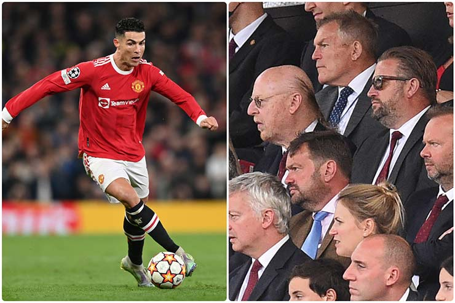

Bản thân HLV Ten Hag không còn mặn mà trong việc giữ chân Ronaldo. Tuy nhiên, thuyền trưởng MU hiểu rằng, nếu để chân sút người Bồ Đào Nha ra đi, ông sẽ không còn nhiều giải pháp trên hàng công. Còn tại Tây Ban Nha, Barcelona đã khởi đầu không tốt tại La Liga mùa này với trận hòa 0-0 trước Rayo Vallecano ngay tại Nou Camp. Màn trình diễn kém hiệu quả của Barca khiến HLV Xavi tiếp tục thúc giục Ban lãnh đạo mua thêm tân binh dù đây là kỳ chuyển nhượng vô cùng sôi động với đội bóng xứ Catalunya.
